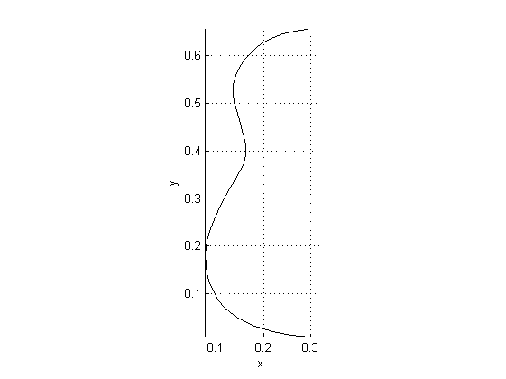
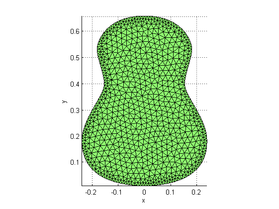
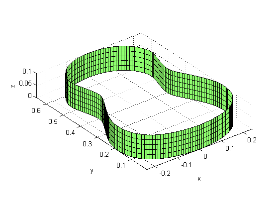
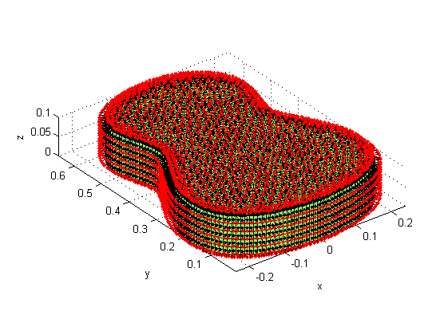

Create BE surface mesh of a guitar body
This demo explains how to create a BE surface mesh of a guitar. The guitar shape is described by cubic Bezier curves, and is saved in an eps file.
Contents
Geometrical parameters
Ly = 0.65; % guitar body length [m] Lz = 0.1; % guitar body depth [m] Le = 0.02; % length of a boundary element [m]
Load and mesh guitar body boundary curve
We first load the boundary curve path of the half guitar body from the postscript file halfguitar.eps using the toolbox function read_epspath. The eps curve needs to be scaled in order to obtain the desired guitar body length. Instead, we first mesh the eps curve with a modified element length (using the toolbox function mesh_path), and the resulting NiHu line mesh is scaled down using function scale_mesh.
epsfile = 'data/halfguitar.eps'; epsfile = fullfile(fileparts(mfilename('fullpath')), epsfile); [bb, path] = read_epspath(epsfile); scale_factor = Ly/max(diff(bb, 1)); bou = meshpath(path, Le/scale_factor); bou = scale_mesh(bou, scale_factor); figure; plot_mesh(bou);
We translate the mesh to the origin and reflect it in order to obtain a full symmetric guitar boundary.
bou = translate_mesh(bou, [-max(bou.Nodes(:,2)) 0 0]); bou = join_meshes(bou, reflect_mesh(bou, [1 0 0])); figure; plot_mesh(bou);

Meshing the body surface and the side plates
The surface of the guitar body is meshed using the toolbox interface function fill_polygon. This function is an interface to the Matlab toolbox mesh2D by Darren Engwirda.
plate = fill_polygon(bou, Le); figure; plot_mesh(plate);
WARNING: 8 duplicate node(s) removed
Mesh2D may refine the boundary of the guitar body surface. Therefore, we redefine the boudary mesh using the toolbox function get_boundary, and extrude it with extrude_mesh in order to obtain the guitar side plate.
bou = get_boundary(plate); nz = ceil(Lz/Le); side = extrude_mesh(bou, [0 0 Lz/nz], nz); figure; plot_mesh(side);
Assembling the guitar mesh
We finally create the guitar back plate by flipping the elements of the front plate, and assemble the guitar mesh from the three parts.
back = flip_elements(plate); top = translate_mesh(plate, [0 0 Lz]); guitar = join_meshes(top, back, side);
After merging coincident nodes and dropping unused nodes, we plot the guitar mesh and outward surface normals
guitar = merge_coincident_nodes(guitar); guitar = drop_unused_nodes(guitar); figure; plot_mesh(guitar); plot_elem_normals(guitar);